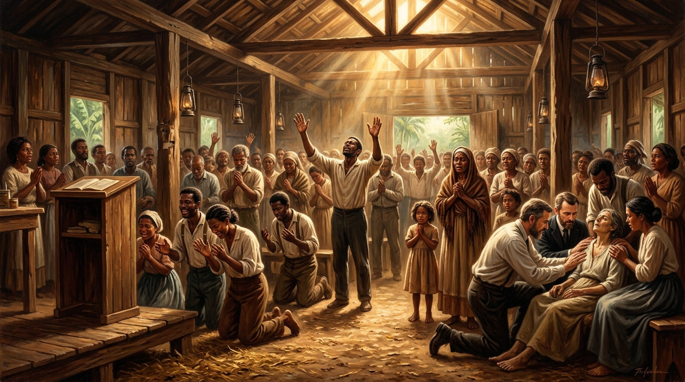

A Demonstração do Espírito, o Batismo em Línguas, as Curas Incuráveis e o Resgate do Modelo de Atos dos Apóstolos

Após conhecermos as dores, a pobreza, o isolamento e as provações enfrentadas por Gunnar Vingren, Daniel Berg, Frida Vingren e pelos pioneiros nacionais, este estudo final volta suas lentes para o combustível sobrenatural que sustentou o avivamento: a manifestação tangível do **poder de Deus**.
Em um Brasil do início do século XX marcado por um índice de analfabetismo superior a 65%, com infraestrutura médica escassa e forte opressão social, o Evangelho pregado pelos pioneiros não se firmou na sabedoria humana de discursos elaborados, mas na demonstração do Espírito e de poder (1 Coríntios 2:4).
O sinal distintivo que marcou o nascimento do movimento pentecostal no Pará em 1911 foi a promessa de **Atos 2:4** tornada viva no cotidiano brasileiro.
A Experiência de Celina Albuquerque e o Foco na Promessa:
Na madrugada de 8 de junho de 1911, ao receber o batismo no Espírito Santo após horas de busca fervorosa e oração contínua, Celina Albuquerque começou a falar em idiomas desconhecidos e a glorificar a Deus sob um impacto de júbilo indescritível. A experiência não foi um evento emocional isolado; trouxe consigo um revestimento de ousadia (*parrhesia*) que levou homens e mulheres simples a testemunharem de Cristo sem temor.
Relatos da época registram que pessoas sem instrução formal falavam e oravam em línguas que posteriormente eram identificadas por imigrantes ou estrangeiros presentes como idiomas cultos (xeilolalia e glossolalia), acompanhadas de interpretações espirituais e profecias que traziam direção às congregações emergentes.
As reuniões nos primeiros tempos eram marcadas pela expectativa da intervenção direta de Deus sobre os enfermos. Diante da impossibilidade de tratamento médico nas regiões inóspitas da Amazônia e do sertão nordestino, os crentes recorriam à promessa de **Tiago 5:14-15** e **Marcos 16:17-18**.
O poder manifesto não se limitou às enfermidades físicas; atuou fortemente na libertação de cativeiros espirituais e vícios destrutivos.
“E estes sinais acompanharão os que crerem: em meu nome expulsarão demônios; falarão novas línguas...” — Marcos 16:17
A imposição de mãos sobre indivíduos atormentados por opressões graves resultava em libertações imediatas. Bêbados inveterados, garimpeiros violentos e chefes de vilas temidos pela brutalidade eram transformados instantaneamente ao entrarem nos locais de culto, tornando-se homens mansos, trabalhadores e pacificadores em suas comunidades.
O movimento pentecostal no Brasil compreendeu sua existência não como uma nova invenção denominacional, mas como a **restauração do cristianismo do Novo Testamento**. Os mesmos fenômenos descritos no livro de Atos reapareceram no solo brasileiro:
A experiência brasileira de poder mantém conexão direta com a corrente de avivamentos que varreu o mundo no início do século XX:
| Relato no Livro de Atos | Manifestação Histórica na AD (Brasil) | Impacto Espiritual e Social |
|---|---|---|
| Batismo com Línguas (Atos 2:4; 10:46) |
Derramamento em Belém (1911) e em convenções estaduais. | Revestimento de poder e intrepidez para evangelizar. |
| Curas Extraordinárias (Atos 3:1-10; 9:34) |
Curas de tuberculose, cegueira e lepra atestadas por médicos. | Abertura do Evangelho em vilas e cidades resistentes. |
| Libertação de Opressões (Atos 8:7; 16:18) |
Expulsão de demônios e quebra de vícios instantânea. | Transformação moral de famílias e regeneração de bairros. |
| Visões e Direção Profética (Atos 10:9-16; 16:9) |
A chamada profética para "Pará" e revelações em cultos rurais. | Expansão geográfica estratégica dirigida pelo Espírito. |
A saga da Assembleia de Deus no Brasil — desde a chamada irrevogável de Gunnar Vingren e Daniel Berg, a inteligência e o sofrimento de Frida Vingren, a fibra dos pioneiros nacionais, até o derramamento de sinais e prodígios — permanece como um dos maiores monumentos da história eclesiástica moderna.
A trajetória desse avivamento demonstra que quando a dor e a provação são recebidas com humildade, e a Palavra de Deus é obedecida com radicalidade, o Espírito Santo responde com poder avassalador, transformando a fraqueza humana em um testemunho imortal para as futuras gerações.